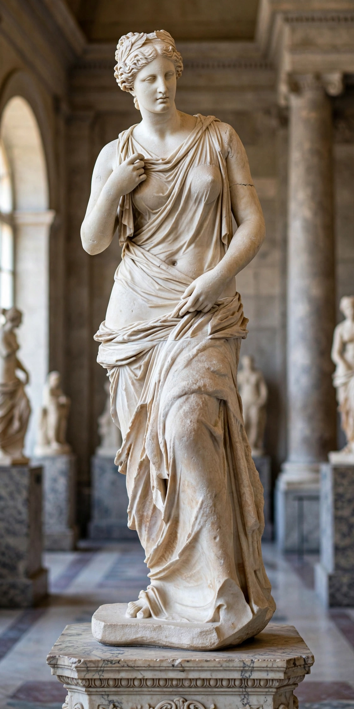

| Venus | |
|---|---|
 | |
| Abode | Mount Olympus |
| Symbol | Rose, myrtle, dove, scallop shell, girdle |
| Consort | Mars; Vulcan (husband) |
| Offspring | Aeneas, Cupid |
| Greek equivalent | Aphrodite |
Venus (Latin: Venus) is a Roman goddess whose functions encompass love, beauty, desire, sex, fertility, prosperity and victory. In Roman mythology she was the divine ancestor of the Roman people through her son Aeneas, who survived the fall of Troy and founded the line that led to Romulus. She became so closely identified with the Greek goddess Aphrodite that the two are often treated as one figure in later art and literature.
Venus may originally have been an Italic goddess of gardens and cultivated fields before absorbing the mythology of Aphrodite through contact with Greek colonies in southern Italy. Her earliest known Roman temple, to Venus Obsequens, was vowed in 295 BCE. Julius Caesar claimed her as his ancestress under the title Venus Genetrix ("Venus the Mother") and dedicated a temple to her in his new forum in 46 BCE; the Julian family's descent from Aeneas made Venus a dynastic deity of the Roman state.
Venus was married to Vulcan, god of fire and the forge, but famously loved Mars, god of war. Her son by the Trojan prince Anchises was Aeneas, hero of Virgil's Aeneid. She was also the mother of Cupid (Eros), the winged god of desire who kindled love with his arrows. In the judgement of Paris, Venus promised Paris the most beautiful woman in the world — Helen of Sparta — in exchange for the golden apple, setting in motion the Trojan War.
Her principal festivals included the Veneralia (1 April), celebrated largely by women, and festivals on 19 August and 26 September. She bore many cult epithets, including Venus Verticordia ("changer of hearts"), Venus Victrix ("the Victorious"), Venus Felix ("the Lucky") and Venus Pompeiana, patroness of Pompeii.
The second planet from the Sun and the only planet named for a female deity bears her name, as does the female symbol ♀. Venus is among the most frequently depicted figures in Western art, from the Venus de Milo and Botticelli's Birth of Venus to Titian's Venus of Urbino.